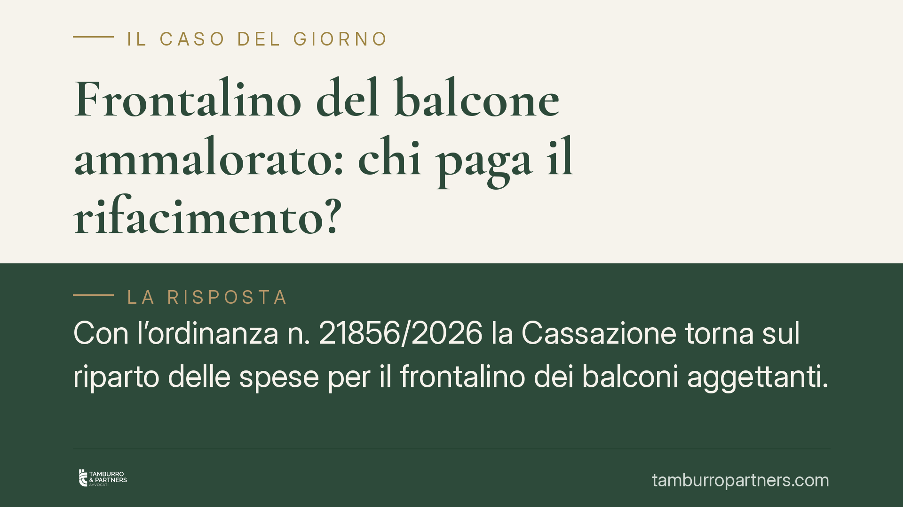

Frontalino del balcone ammalorato: chi paga il rifacimento?
Con l'ordinanza n. 21856/2026 la Cassazione torna sul riparto delle spese per il frontalino dei balconi aggettanti. Quando l'elemento concorre al decoro architettonico della facciata, il costo del rifacimento grava su tutti i condomini, anche se il degrado deriva dall'incuria del singolo. Una pronuncia che incide direttamente sui bilanci condominiali e sulle delibere assembleari.

Il caso
Un condomino chiedeva che le spese per il rifacimento del frontalino del proprio balcone aggettante fossero poste a carico dell'intero condominio. Il frontalino è la fascia frontale che chiude il bordo esterno del balcone: spesso rivestita o decorata, è ben visibile dalla strada. Il degrado dell'elemento (l'"ammaloramento") rischiava di provocare distacchi di materiale, con pericolo per i passanti e per i condomini dei piani inferiori.
La Cassazione, con l'ordinanza n. 21856 del 25 giugno 2026, ha confermato un principio ormai consolidato ma non sempre applicato correttamente in sede assembleare.
Inquadramento normativo
Il punto di partenza è l'art. 1117 cod. civ., che individua le parti comuni dell'edificio. I balconi aggettanti — cioè quelli che sporgono dalla facciata senza funzione di sostegno per le unità sovrastanti — sono in linea di principio di proprietà esclusiva del condomino al cui appartamento accedono. Ne consegue che le spese per la struttura e per la superficie calpestabile gravano sul singolo.
Il discorso cambia per gli elementi che svolgono una funzione estetica prevalente a servizio dell'intera facciata. La giurisprudenza distingue infatti tra la parte del balcone che serve il solo proprietario e gli elementi decorativi — frontalini, rivestimenti, fregi, cornici — che si inseriscono nel prospetto dell'edificio e ne costituiscono il decoro architettonico.
Quando il frontalino, per materiali, colore o linea, concorre all'armonia estetica della facciata, esso assume rilevanza condominiale. La spesa per il suo rifacimento si ripartisce allora tra tutti i condomini ai sensi dell'art. 1123 cod. civ., perché l'intervento riguarda un bene a utilità comune.
Il punto decisivo: l'incuria non sposta il riparto
Il dato più significativo dell'ordinanza riguarda l'irrilevanza dell'incuria del proprietario. Anche se il degrado del frontalino è dipeso dalla mancata manutenzione da parte del singolo, questo non trasferisce su di lui l'intero onere quando l'elemento ha funzione estetica comune.
La funzione decorativa dell'elemento determina la natura della spesa, a prescindere dalla causa del deterioramento. Resta ferma, in via separata, la possibilità di far valere la responsabilità del condomino negligente qualora la sua condotta abbia cagionato un danno specifico.
La ratifica dell'intervento urgente
La Corte affronta anche un profilo procedurale frequente. L'amministratore aveva avviato i lavori per ragioni di urgenza — rischio di caduta di calcinacci — senza una delibera assembleare preventiva.
Secondo la Cassazione, la successiva ratifica dell'assemblea sana l'operato dell'amministratore. L'approvazione postuma consolida la spesa e la rende opponibile ai condomini, purché l'urgenza fosse effettiva e l'intervento proporzionato. Si tratta di un'applicazione del principio secondo cui l'amministratore può agire senza preventiva autorizzazione nei casi di urgenza, salvo riferirne poi all'assemblea.
Implicazioni pratiche
Per il condominio e per l'amministratore la pronuncia impone attenzione in sede di riparto: addebitare l'intera spesa al singolo proprietario, muovendo dalla sola proprietà del balcone, espone la delibera a impugnazione quando il frontalino ha valore decorativo comune.
Per il proprietario del balcone il principio è favorevole sul piano economico, ma non lo esonera dalle responsabilità per i danni derivati dalla propria incuria.
Per il condomino del piano inferiore, potenzialmente esposto ai distacchi, la pronuncia conferma la legittimità degli interventi urgenti promossi dall'amministratore a tutela della sicurezza.
Cosa fare in concreto
- Verificate la funzione dell'elemento prima di deliberare: distinguete tra parti del balcone a servizio del solo proprietario e elementi decorativi che incidono sul decoro della facciata.
- Documentate l'urgenza con relazione tecnica e fotografie quando l'amministratore interviene senza delibera preventiva: è il presupposto per una ratifica efficace.
- Sottoponete la ratifica all'assemblea alla prima riunione utile, indicando spesa, causale e criterio di riparto adottato.
- Impostate correttamente il riparto nel verbale, richiamando l'art. 1123 cod. civ. per le spese a utilità comune.
- Valutate separatamente eventuali azioni di responsabilità verso il condomino negligente per i soli danni specifici, senza confonderle con il riparto della spesa di rifacimento.
---
Contributo informativo a cura di Tamburro & Partners - Avv. Giuseppe Tamburro. Non costituisce parere legale.
Ogni condominio ha una storia a sé.
Se gestisci un'amministrazione e vuoi un confronto su una specifica questione condominiale, scrivi allo studio. Ti rispondiamo entro un giorno lavorativo.